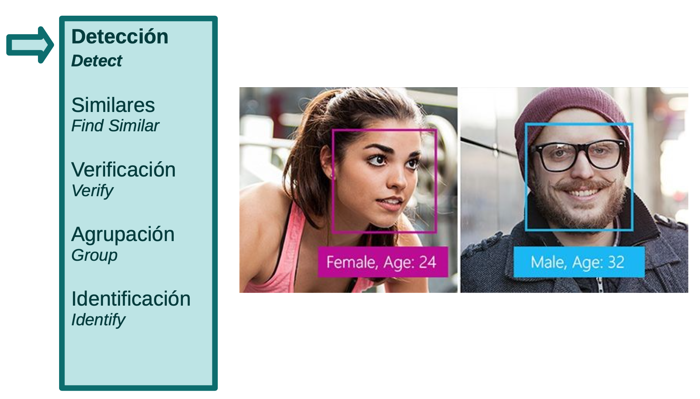
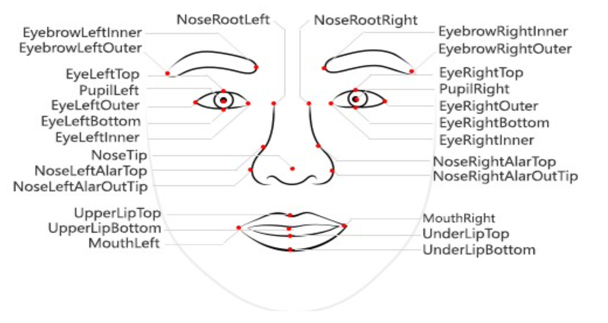
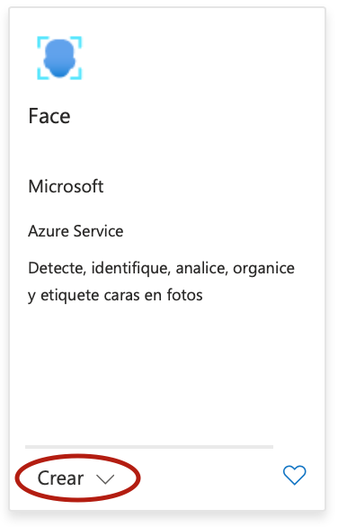
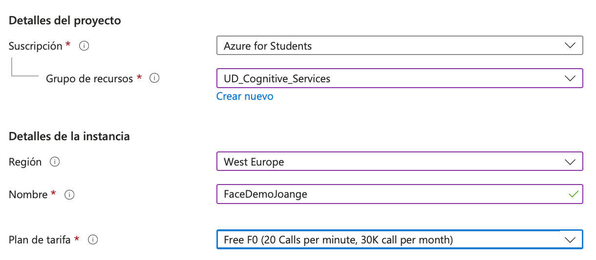

2. Azure Face
1. Introducció a Face - No vàlid amb compte corporatiu
Face és el servei de reconeixement facial d'Azure Cognitive Services. Aquest servei ens ofereix cinc operacions relacionades amb el reconeixement de cares en imatges:
- Detecció (
Detect) → És la funcionalitat bàsica de Face, que permet detectar les cares en una imatge, i obtenir informació de cadascuna de les cares detectades.

- Cares similars (
Find Similar) → Permet localitzar cares similars a una de donada dins d'un conjunt de cares. Per defecte se seleccionen cares que pertanyin a la mateixa persona, però si s'indica un nombre mínim de cares que cal obtenir, es seleccionaran les més semblants, encara que pertanyin a altres persones. - Verificació (
Verify) → Aquesta opció permet determinar si dues cares pertanyen a la mateixa persona. - Agrupació (
Group) → Permet agrupar un conjunt de cares per semblança (normalment es crea un grup per a cada persona). - Identificació (
Identify) → Aquesta funcionalitat permet identificar una persona a partir d'una imatge amb la cara. Per utilitzar-lo cal haver associat a aquesta persona un conjunt d'imatges de la cara.
1.1. Estructures de dades de les API
Quan utilitzem les funcionalitats de l'API de Face haurem de manipular diferents estructures de dades, entre les quals hi ha les següents:
DetectedFace→ representa una cara detectada en una imatge. Inclou informació de la cara (a la petició es pot indicar quina informació es vol obtenir) i per defecte té una vigència de 24 hores.PersistedFace→ és semblant a l'anterior, però no té caducitat. Quan un objecte DetectedFace s'afegeix a algun tipus de col·lecció de cares (FaceList o Person) es converteix en PersistedFace.FaceList→ llista variada d'objectes PersistedFace, que normalment pertanyen a persones diferents.Person→ representa una persona, i està format per un conjunt d'objectes PersistedFace d'aquesta persona, a més del nom.PersonGroup→ llista dobjectes Person. Un objecte Person sempre ha de pertànyer a un PersonGroup.
1.2. Informació de les cares
Quan utilitzem la funcionalitat de detecció de cares, per a cadascuna de les cares detectades (objecte DetectedFace) podrem obtenir informació descriptiva de la cara. Sempre s'obtindrà la localització de la cara dins de la imatge (el que s'anomena el rectangle de la cara), però a més es pot sol·licitar la informació següent:
- Punts de referència de la cara → coordenades dels diferents punts que defineixen les parts de la cara.
- Atributs de la cara característiques descriptives de la cara, entre les quals hi ha l'edat, el sexe, l'emoció o la presència de màscara.

1.3. Imatges d'entrada
Aquestes són algunes de les característiques i limitacions més importants de Face:
- Les imatges que es processen poden estar en els formats JPEG, PNG, BMP i GIF (si és una animació es processarà el primer fotograma).
- El servei admet processar imatges a partir d'un URL o rebent les dades binàries de la imatge.
- La mida màxima de les imatges a processar és de 6 MB.
- El nombre de màxim de cares que es poden detectar en una mateixa imatge és de 100. Les imatges processades no s'emmagatzemen a Azure. Únicament es guarden les dades descriptives de les cares detectades.
2. Configuració del servei
El primer que haurem de fer és crear el recurs de Face des del nostre tauler de control de Azure
Creem el recurs de Face:

Indiquem tots els paràmetres. Revisa la opció Free F0

Verifiquem i acceptem:

Com sempre en Claves y productos és on haurem de copiar el token i els entrypoint.
Enllaços d'interès
- Podem accedir a la documentació ràpidament Inici ràpid amb Python
- Podem testejar la api desde aquesta pàgina *En aquest repositori de github podem trobar imatges de test
Ademés:
- Les peticions a aquests serveis, els podem fer be directament amb API request o be amb el SDK que ens ofereix Microsoft per a cada llenguatge. Escollirem aquesta última opció
© Materials basat en els de Javier Català Desarrollo de aplicaciones inteligentes con Azure Cognitive Services